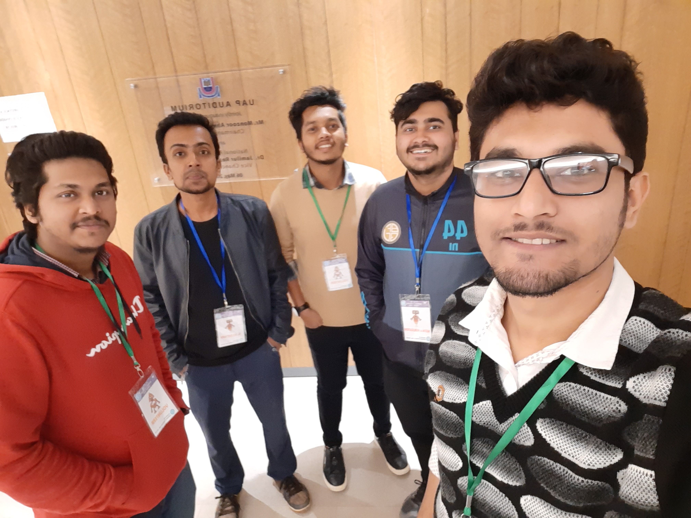

Rakin Mohammad Sifullah
My Resume
159/A/1, 2A,
Mohammadi Housing Ltd. road: 03,
Mohammadpur-1207, Dhaka, Bangladesh · (+880) 01734195472 ·
rakin.sifullah@gmail.com
Hey there, I am Rakin. I'm a Computer Science Engineer. As a computer science student I have to work with front-end and back-end. But I like to work with front-end most. I like to receive and deal with challenging tasks and I think this is a strong point of mine.

Activities & Social Works

Founding member of ‘Himu Paribahan’ Dinajpur zone. Himu Paribahan is a social organization, works for cancer awerness.
I am a member of Ex-student Forum, Police Line High School. Every year we try to help helpless peoples.